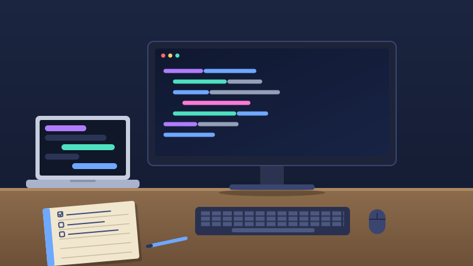
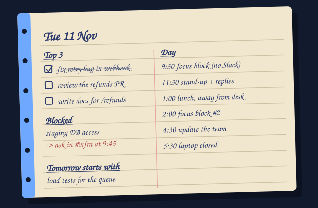

I Was Stuck for Three Hours Because I Didn't Want to Bother Anyone
What I've learned about asking for help, writing async, and getting through a remote workday without losing your mind.
A few months into working from home, I lost an entire afternoon to a bug that turned out to be one wrong environment variable.
Not a hard bug. The kind a teammate would have spotted in thirty seconds. In an office, someone would have walked past my screen and said "hey, is that the staging config?" At home, nobody walks past. Nobody sees you frowning. The only person who knows you're stuck is you, and I had decided I wasn't stuck enough yet to interrupt anyone.
Three hours later I finally typed the whole problem out in Slack, mostly so I could say I'd tried everything. Halfway through writing it, I saw the mistake myself. I sent the message anyway, with a "never mind, found it" at the end. A teammate replied within six minutes: "ha, that one gets everyone."
That afternoon taught me more about remote work than any setup guide. The hard part isn't the distance. It's that everything which used to happen by accident now has to happen on purpose: asking for help, knowing what everyone else is doing, even knowing when to stop for the day.
Here's what I do now. None of it is fancy.
The setup is boring on purpose
A laptop, one monitor, a keyboard, a mouse, and a paper notebook. That's it. I keep Slack and docs on the laptop screen and code on the monitor, so I'm never alt-tabbing between "the thing I'm building" and "the person who's asking me something."

If I had to give up one of those things, it wouldn't be the monitor. It'd be the notebook, which brings me to the first habit.
Plan your day before you open Slack
If you don't decide what your day is about, your inbox will decide for you. So the first ten minutes of my day are for the notebook, before any chat app is open.
I write down four things:
- The three things I want finished today. Three, not eight.
- Anything I'm blocked on, and who I need to ask. This is the one that would've saved my afternoon.
- A rough shape for the day: when I'll focus, when I'll answer messages, when I'll eat.
- What I'll start with tomorrow (written the evening before).

That last one matters more than it looks. Ending the day with "tomorrow starts with X" means I don't spend the first half hour working out where I left off.
How to ask for help when nobody can see you struggle
Most people wait too long to ask, and then ask badly. I've done both. This is what works for me.
Give yourself a timer
I use thirty minutes of honest effort. If I'm still stuck after that, I ask. Pick your own number, but pick one. Without a number, pride fills the gap and three hours go by.
Write the question so it can be answered without a call
A good question has what you're trying to do, what you expected, what actually happened, and what you already tried. Add the error text or a link. That's most of the work, and it often solves the problem before you hit send. Compare these two:
hey, are you free for a quick call? the build is failing
Build fails on the payments branch since this morning:
Missing env var PAYMENTS_API_URL in CI (log
attached). Works locally. I've checked the var exists in the staging
config and re-run twice. My guess is CI secrets aren't synced, but I
can't see them. Could someone with CI access take a look? Not
urgent, but I can't merge until it's green. Happy to jump on a call
if that's faster.
The second one takes ninety seconds longer to write and saves everyone a context switch. The person answering can do it between two other things, which is exactly what you want.
Ask in a channel, not a DM
When it's not sensitive, post in the team channel. More people can answer, the answer is searchable later, and the next person who hits the same thing finds it instead of asking again. It also makes asking feel more normal for everyone, especially the newest person on the team.
Say what kind of help you need, and by when
"A pointer is enough" and "I need fifteen minutes of pairing" are very different requests. And "no rush" or "I'd like to merge by 4" lets people prioritise without guessing.
Async, in plain words
Asynchronous communication just means you don't need the other person to answer right now. You send something, they respond when they can, and neither of you stops what you're doing. A meeting or a call is synchronous. A well-written message or a doc is async.
It matters most when your team is spread across time zones, but it helps even in the same city. Every interruption you skip is focus someone keeps.
The habits that make it work:
- Write for someone reading in three hours with no context. They weren't in your head when you wrote it. Include the link, the ticket, the screenshot.
- Put the ask first. "Can you review this by Thursday?" goes in the first line, with the background underneath.
- One topic per message. Three questions in one message gets you an answer to one of them.
- Offer a default. "If I don't hear back by 3pm, I'll go with option A." Now silence isn't a blocker.
- Agree on response times. Hours, not minutes. If everyone replies instantly, it isn't async anymore, it's just slow chat.
- Know when to stop typing. If a thread goes past four or five back-and-forths, hop on a quick call, then post a two-line summary of what you decided.
Slack habits that save everyone's attention
Slack is a great tool and an easy way to be distracted all day. A few things that made it work for me instead of against me:
- Reply in threads. It keeps the channel readable and lets people mute a conversation that isn't theirs.
- Don't send just "hi". Say what you need in the first message. Then the other person can answer whenever they see it, instead of replying "hi" and waiting.
- Use your status honestly. "Heads down until 2pm" or "at lunch" tells people not to expect a quick answer, so they don't wonder.
- Set notification hours and use Do Not Disturb. I keep mentions and DMs on and silence everything else during focus blocks.
- Mute channels you don't need. You don't have to read everything. Being in a channel isn't the same as owing it your attention.
- Use reactions instead of "ok" messages. ✅ for done, 👀 for "looking at it". It acknowledges without adding noise.
- Schedule send if a teammate is offline. A message that lands at 9am their time beats one that buzzes their phone at midnight.
-
Use
/remindfor follow-ups, like/remind me to check the deploy at 4pm, so you can stop keeping things in your head. - Save huddles for quick things, and write down the outcome afterwards. If it only happened on a call, it didn't happen for everyone who wasn't on it.
-
@mention people who need to act, and save
@channelfor things that really are for everyone.
A few other things that helped
- Make a fake commute. Ten minutes of walking before and after work. It sounds silly, but it's the difference between "working from home" and "living at work."
- Block focus time on your calendar. If it isn't there, it'll get booked over.
- Say when you're done. Nobody can see you leave, so there's no natural end. Post a quick sign-off and close the laptop.
- Eat away from the desk. A real break makes the afternoon better than another hour of grinding.
- Talk to people about non-work things. Remote can get lonely. I schedule the occasional call with a teammate just to chat. It's worth the half hour.
Why I like it anyway
- I get my commute back. That's an hour or two a day I can spend on sleep, exercise, or family.
- Deep focus is easier. No one stops by my desk, and I choose when to look at messages.
- I can work with people anywhere. Teams aren't limited to whoever lives near the office.
- My writing got better. Remote work forces you to explain things clearly, and clear writing usually means clear thinking.
- Everything leaves a trail. Decisions and answers live in threads and docs instead of in someone's memory.
- It saves money. Fewer lunches out, no transport costs.
It's not perfect. Isolation is real, and some problems are just faster at a whiteboard. But the trade has been worth it for me.
Back to the bug
These days, when I'm stuck, I set the thirty-minute timer. When it goes off, I write the question out properly, and about a third of the time I find the answer while writing it. The rest of the time, someone answers before I've finished my coffee.
Nobody has ever been annoyed that I asked. Not once. They're more annoyed when I disappear for three hours and come back with a deadline problem.
If you work remotely, I'd like to hear which habit saved you. You can find me on the contact page.